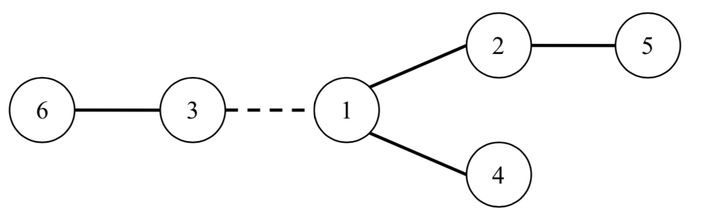
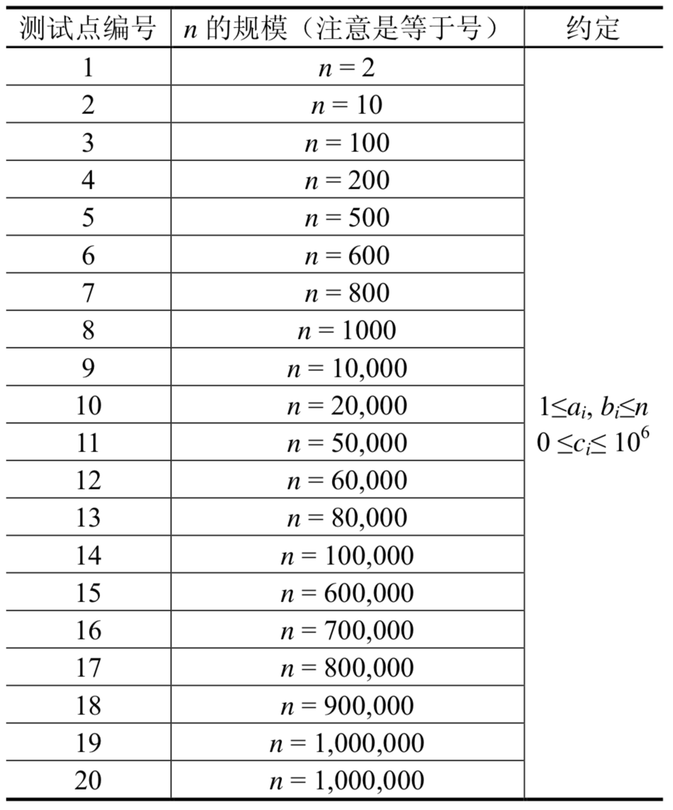

在W星球上有$n$个国家。为了各自国家的经济发展，他们决定在各个国家之间建设双向道路使得国家之间连通。但是每个国家的国王都很吝啬，他们只愿意修建恰好$n–1$条双向道路。
每条道路的修建都要付出一定的费用，这个费用等于道路长度乘以道路两端的国家个数之差的绝对值。例如，在下图中，虚线所示道路两端分别有2个、4个国家，如果该道路长度为1，则费用为1×|2–4|=2。图中圆圈里的数字表示国家的编号。

由于国家的数量十分庞大，道路的建造方案有很多种，同时每种方案的修建费用难以用人工计算，国王们决定找人设计一个软件，对于给定的建造方案，计算出所需要的费用。请你帮助国王们设计一个这样的软件。
输入的第一行包含一个整数$n$，表示W星球上的国家的数量，国家从1到$n$编号。
接下来$n–1$行描述道路建设情况，其中第$i$行包含三个整数$a_i、b_i$和$c_i$，表示第$i$条双向道路修建在$a_i$与$b_i$两个国家之间，长度为$c_i$。
输出一个整数，表示修建所有道路所需要的总费用。
6 1 2 1 1 3 1 1 4 2 6 3 1 5 2 1
20
【数据规模与约定】
所有测试数据的范围和特点如下表所示

 Comet OJ
Comet OJ